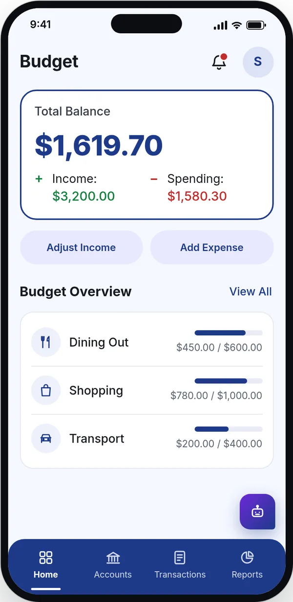
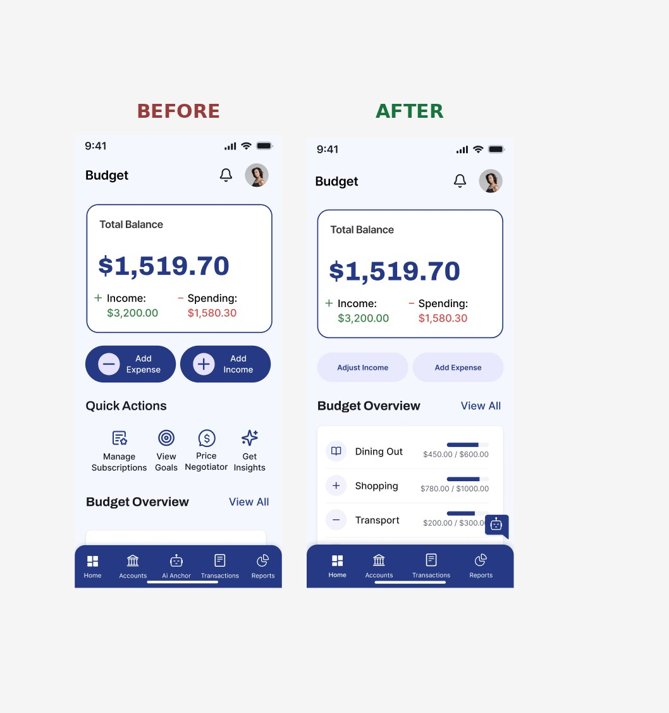

An AI budgeting coach people trust
Tapping a card doesn't feel like spending, so small buys and forgotten subscriptions add up. For our master's capstone, our team of 4 designed Money Anchor, a budgeting app with an AI coach that speaks up before you spend and explains why.
People who overspend first and regret later, and avoid money apps
An AI coach that explains every suggestion and leaves you the final say

The problem
Money that doesn't feel real
Cards and digital wallets remove the small pain of paying, so spending feels effortless until the statement arrives. Forgotten subscriptions keep charging. And most budgeting apps only chart the past, which many people avoid opening.
I spend more when I'm bored. Surfing online equals unnecessary spending.
If my friends are going out, I'm going out too.
I like when I get positive messages like, 'You saved $50 this week!'
Research
40+ papers, 10 apps, 24 people
We found 40+ research papers on spending behavior, and I summarized and analyzed them with AI. We benchmarked 10 budgeting apps, including Mint, YNAB, Rocket Money and Copilot. Then we interviewed 8 people aged 20 to 32 and ran 4 focus groups with 16 more, with university ethics (IRB) approval.
Synthesis
50+ quotes into themes, 100 ideas into 10
- People don't need more graphs. They need money in context, like "this meal costs 3 hours of work."
- Forgotten subscriptions were a big, silent leak.
- People would trust AI only if it explained itself and left the final say to them.

Each of us wrote 25 ideas, 100 in all. We sorted them into 7 themes, cut duplicates down to 64, then voted. The top 10 went into the prototype, like spotting unused subscriptions and AI forecasts for savings goals.
Decisions log
An AI that explains, and leaves you in charge
We wireframed 5 sections with a bottom bar, like a bank app, so there was less to learn. In Figma, we turned them into high-fidelity screens built from shared components. I designed the AI coach and the budget flows.
Explain every suggestion
People wanted the reason and the final say, not orders. So each AI suggestion shows why, and how sure it is, before you apply it or say no.
Round two: 6 of 8 testers completely trusted the AI's budget advice.

Help before you buy
Spending decisions happen in the moment, not in a monthly report. So you can ask the AI before a purchase, and it compares products, prices and stores within your budget.
Round one: everyone finished the shopping task.

A nudge, not a lecture
People said apps that scold them make them avoid money altogether. So alerts are gentle, and the AI suggests while you decide.
7 of 8 testers said an alert would make them rethink or cancel a purchase.
Testing with 16 people
Two rounds, then fix what failed
We ran 2 rounds of moderated tests on Maze and Zoom, 8 people per round. Each person explored the app, acted on AI advice, adjusted a budget and asked the AI for buying advice, thinking out loud while Maze recorded success, time and misclicks.
The AI gets its own button
In round one, the AI sat in the bottom menu and people missed it. It became a chat bubble you can open from any screen, with a gradient so it stands apart.
Round two: 100% finished the AI chat task.

Buttons that say what they do
Testers misread the plus and minus icons. We labeled the main buttons Adjust Income and Add Expense.
Round two: 100% success and 0% misclicks.

Changing a budget is still hard
In round two, adjusting a budget still caused 54.7% misclicks, because people couldn't find where to start. We added Adjust to a menu on each budget.
Results and learning
What changed, and what I learned
Watch, don't just ask
Testers rated navigation 4.4 out of 5 while still missing buttons. Behavior told the real story.
If they can't find it, it can't help
The AI only worked for people once it was visible from every screen.
Trust takes time
People wanted suggestions, not orders, and checked bigger decisions themselves.
Voice check-ins
A ten-second spoken summary of the week, for people who avoid opening money apps.
Let people correct the AI
One tap fixes a wrong category, so the suggestions get more personal over time.